Po lewej „Cześć, jestem Anka.” + podtytuł „Pomogę Ci ogarnąć imprezę.” (konkretny rzeczownik mówi, czym się zajmujemy); po prawej siatka 4×3 jak w noho: 7 zdjęć w stałych komórkach (4:5), reszta pusta. Max szerokość kontenera i marginesy regulujesz w panelu Design system.
Cześć, jestem Anka.
Pomogę Ci ogarnąć imprezę.
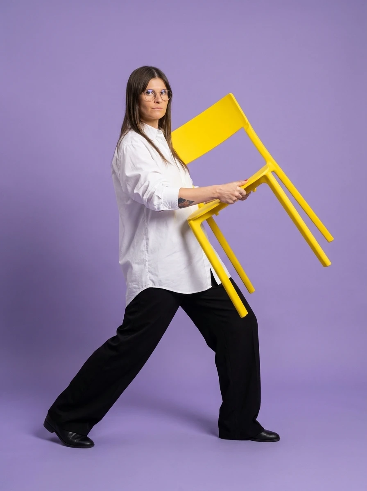
foto 1
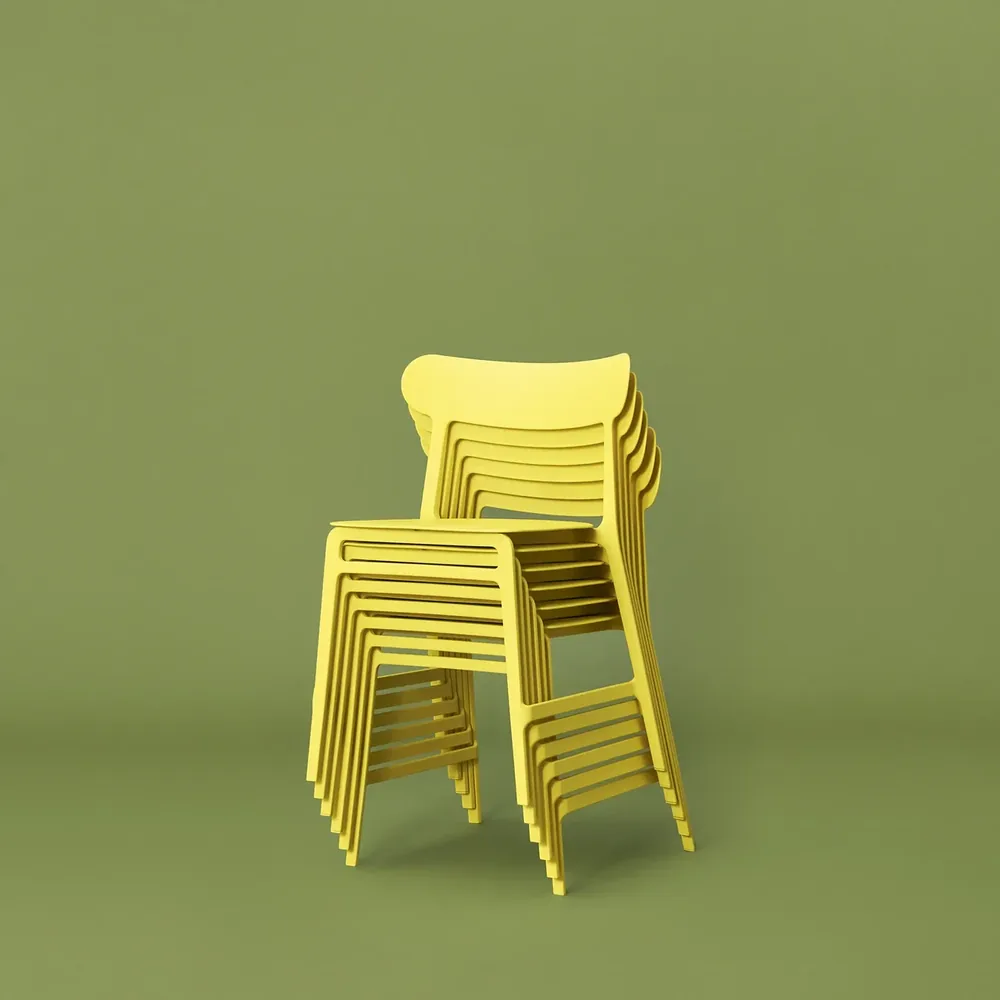
foto 2
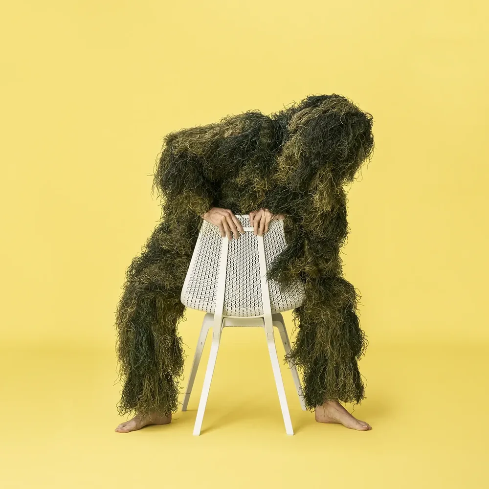
foto 3
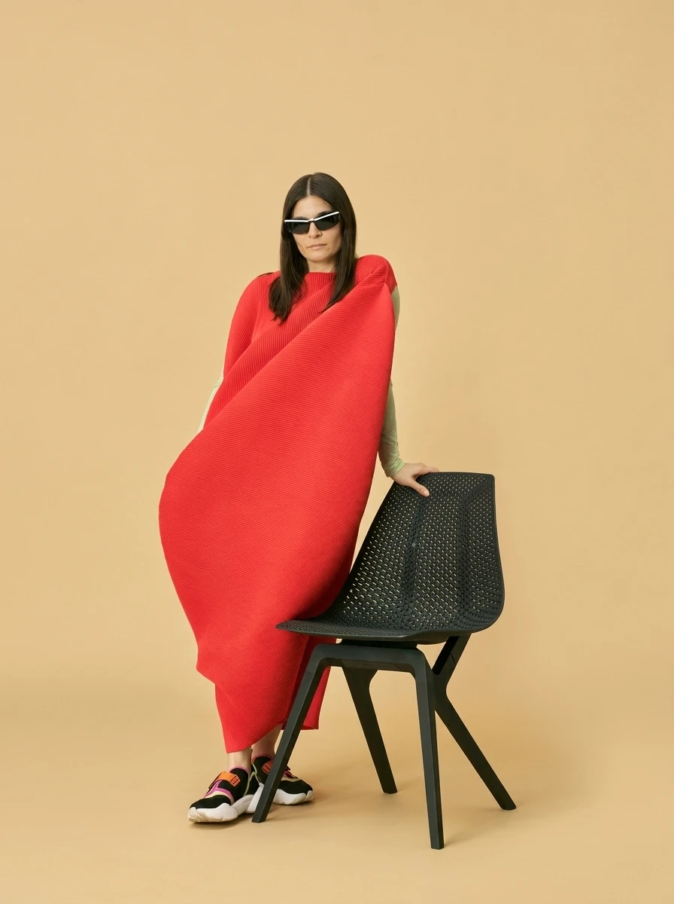
foto 4
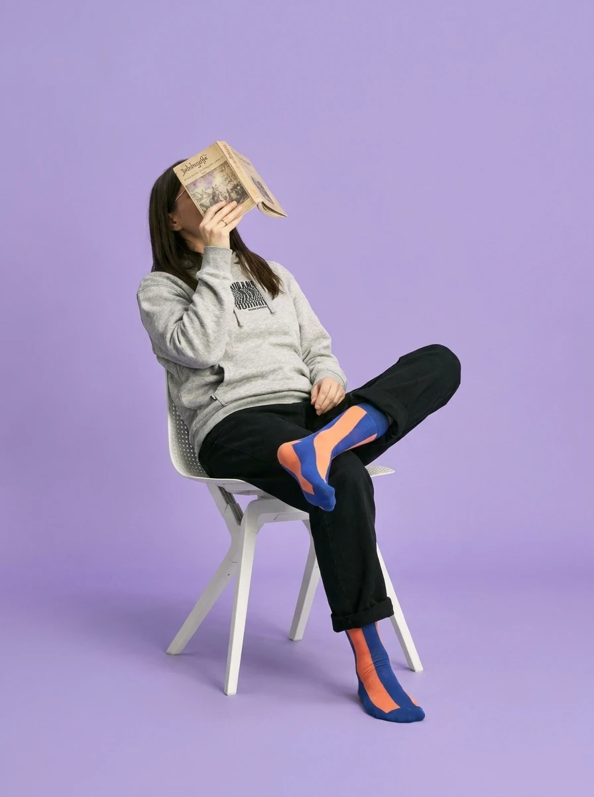
foto 5
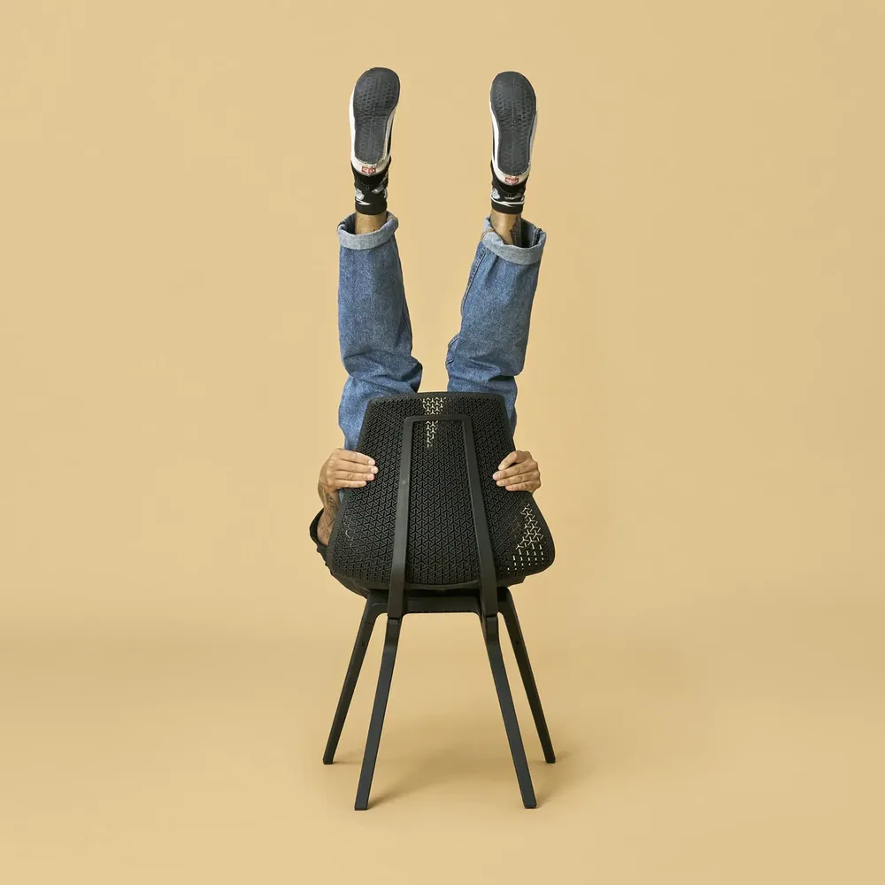
foto 6
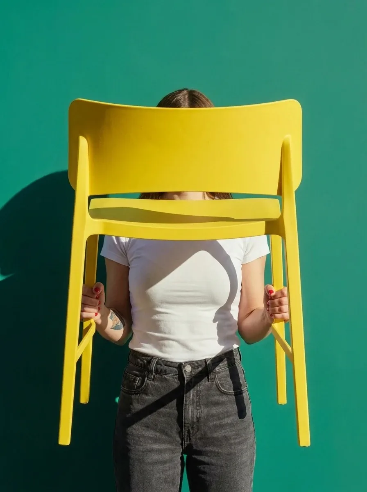
foto 7
02 · CLAIM
Claim wyśrodkowany; po scrollu strona dosnapowuje (hero → claim), a pod spodem zostaje kawałek kolejnej sekcji (--peek). Gra słów „po obu stronach kurtyny”: kreacja i biznes, to co widać i czego nie widać. Odpowiada na problem, że branża zna tylko wycinek umiejętności Anki.
Od ponad 20 lat działam po obu stronach kurtyny: od kreacji po biznes.
Z tym, co widać, i z tym, czego nie widać.
03 · SCROLL TRACK
Jak u Lando: sekcja przypina się, a pionowy scroll przesuwa poziomą taśmę zdjęć (różne rozmiary i wysokości) z podpisami (prawdziwe projekty z dokumentu: Going., Żarcie Na Kółkach, trasa Maty itd.) i wstawkami tekstu. Taśma ma 35 jednostek szerokości (--tw), jednostka = 1/10 wysokości ekranu.
foto
Going. · współzałożycielka, 2015–2023
foto
Żarcie Na Kółkach · własny projekt, rozwijany przez lata
Lekko szacując, działałam przy ok. 50 000 wydarzeń.
— od ponad 20 lat w branży
foto
World Wide Warsaw · cykl koncertów zagranicznych gwiazd
foto
Trasa Maty 2025 · współpraca z managementem
foto
PGE Narodowy · dwa koncerty
foto
JIMEK, Bemowo · koncert dla ponad 50 000 osób
foto
Rapstacja · sponsoring
foto
Warsaw Padel Club · sponsoring i wydarzenia
Do każdej potrzeby dobiorę i skoordynuję właściwe środki, narzędzia i ekspertów z rynku.
— Anka
foto
Quilla · narzędzia dla organizatorów
foto
[Kolejny projekt: do uzgodnienia]
04 · TRZY WEJŚCIA (back-to-back)
Trzy Anny plecami do siebie (jak Aniołki Charliego), każda w innej stylizacji, jako trzy główne grupy odbiorców: Organizatorzy i kluby (patrzy w lewo, słuchawka + krótkofalówka/terminarz), Artyści i zespoły (patrzy prosto, na luzie), Marki i sponsorzy (patrzy w prawo, biznesowo, z telefonem). Tytuły jak „On/Off Track" u Lando (serif + bold), z dużym neonowym „&" w tle (jak „Collabs"). Opisy mają zbliżoną długość (59–62 znaki). Zdjęcia są wycięte (przezroczyste PNG/WebP) i ułożone jak w kompozycji wzorcowej: po lewej Anka „eventowo” (słuchawka, notatnik), pośrodku „artystycznie” (kolorowy dres), po prawej „biznesowo” (błękitna koszula). Środkowa postać jest największa i na wierzchu; boczne są mniejsze i nachodzą pod nią. Za każdą jest łuk w kolorze motywu (głębia). Hover wysuwa postać. Mobile: przesuwany pasek 3 kart.
OrganizatorzyKluby
Od pomysłu i budżetu po produkcję, sprzedaż i program klubu.
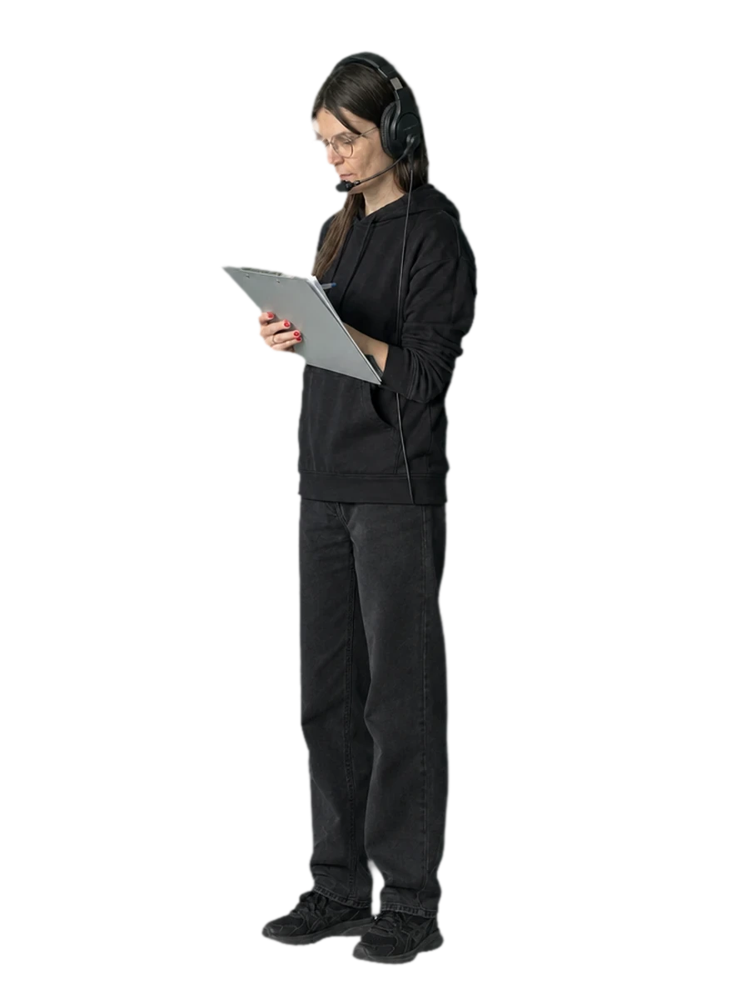
ArtyściZespoły
Strategia koncertowa, trasy i pozycjonowanie na rynku live.
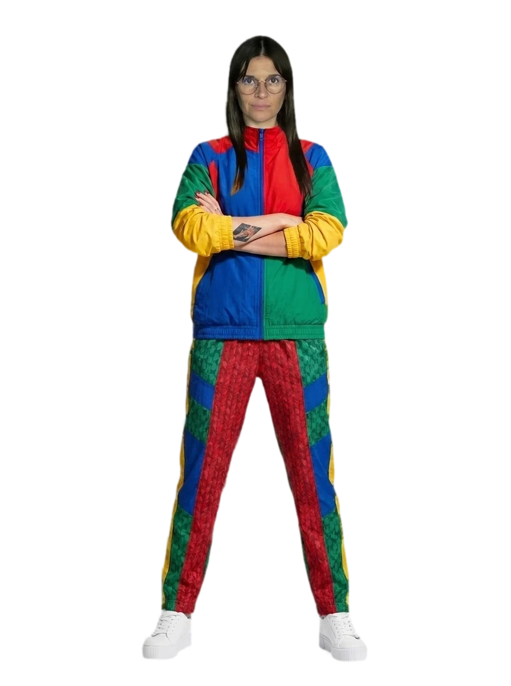
MarkiSponsorzy
Oferta, dopasowanie marek, negocjacje i aktywacje sponsorskie.
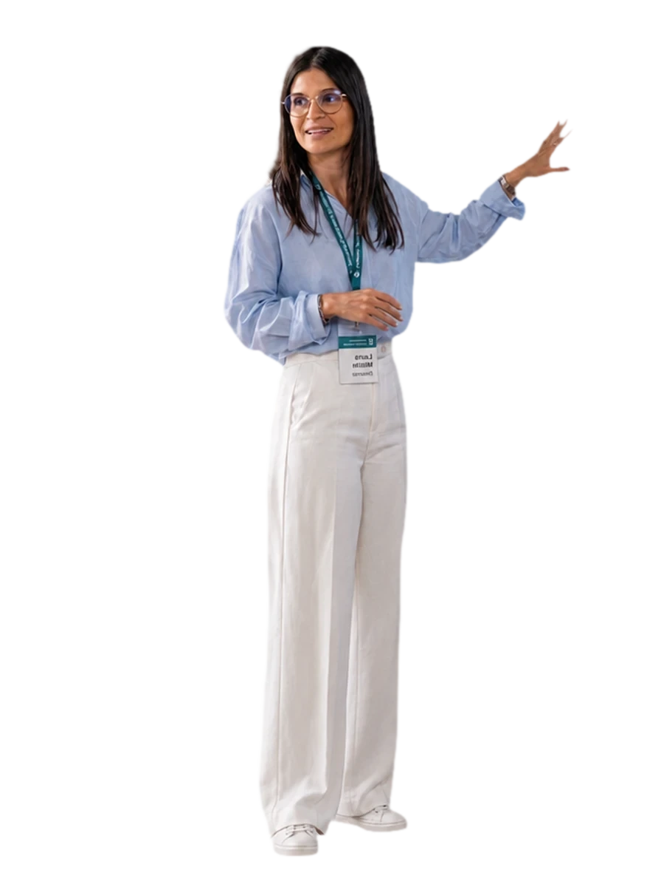
05 · FESTIWALE I TRASY
Układ 3 kolumny × 4 rzędy (liczbę kolumn zmienisz suwakiem „Kolumny kafelków” w panelu Design system, np. 4 = układ 4×3). Kafelki są lekko pionowe: wysokość = 1,2 × szerokość (pod klipy kwadratowe i z telefonu). Proporcję zmienisz suwakiem „Wysokość kafelka” w panelu Design system (np. 1,27 = pierwiastek ze złotej, 1,33 = 3:4). Kafelek: u góry nazwa i data, na środku duża wartość (zasięg), na dole przypis. Hover lub fokus → zdjęcie z wydarzenia (docelowo wideo 3–5 s; zdjęcia z Wikimedia Commons, autorzy w assets/events/CREDITS.md; wszystkie dostają wspólny filtr duotonowy z kolorów aktualnego motywu (--duo-lo / --duo-hi); JIMEK, Going. i kafelki zbiorcze czekają na zdjęcia). Liczby z dokumentu (JIMEK 50 000+, ~50 000 wydarzeń, 20+ lat, Going. 8 lat = 2015–2023). Wyszarzone [X] i [rok] to dane do uzupełnienia. Kafelki z dopiskiem „przykład” (Flying Lotus, Bicep, Glasper, Autechre) mają wartości wygenerowane na próbę; artyści i dni z plakatów World Wide Warsaw.
Festiwalei trasy
Mata · trasa2025
[X]rekordowa trasa Maty
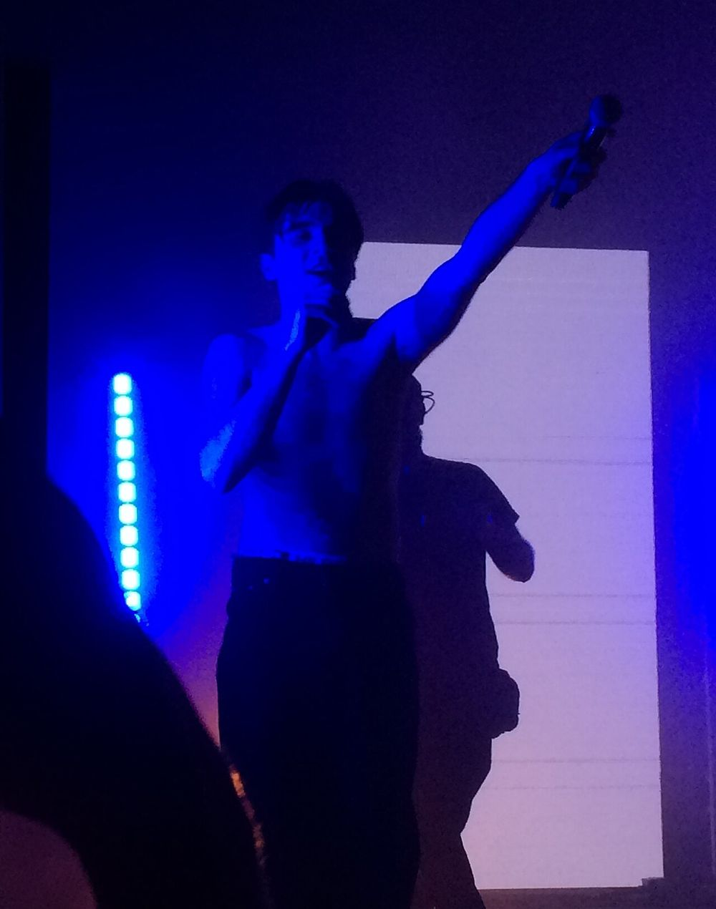
Foto: Franek Vetulani · CC BY-SA 4.0
JIMEK · Bemowo[rok]
50 000+osób na jednym koncercie
zdjęcie: do dodania (docelowo wideo 3–5 s)
PGE Narodowy[rok]
2 koncertywspółpraca z managementem Maty
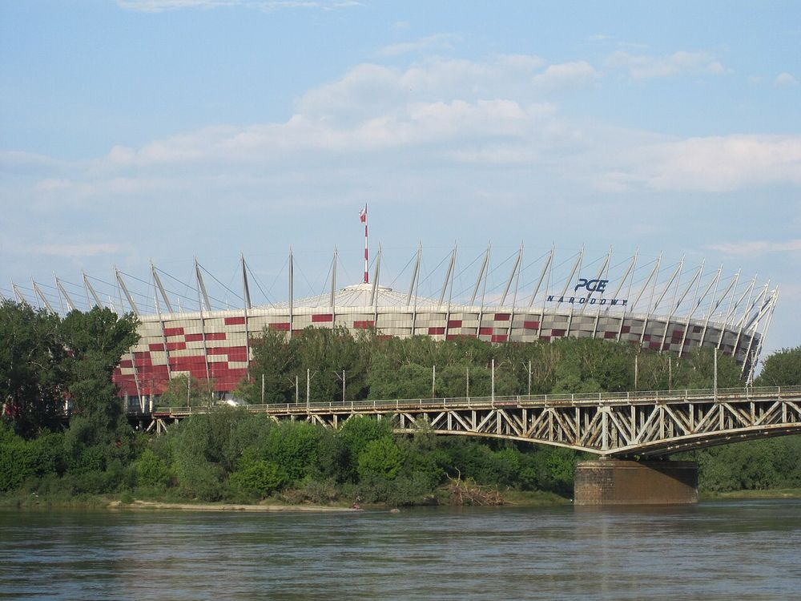
Foto: Chicken4War · CC BY-SA 4.0
World Wide Warsaw[rok]
[X]koncertów zagranicznych gwiazd w cyklu
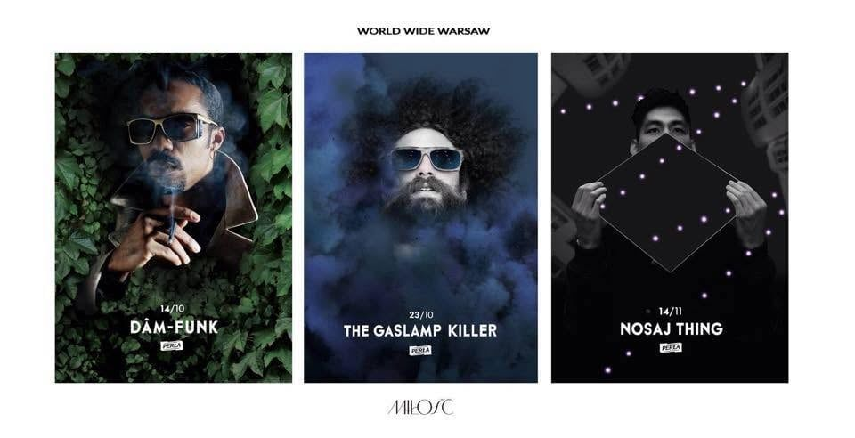
Plakat WWW
Żarcie Na Kółkach[rok]
[X]zlotów food trucków w całej Polsce
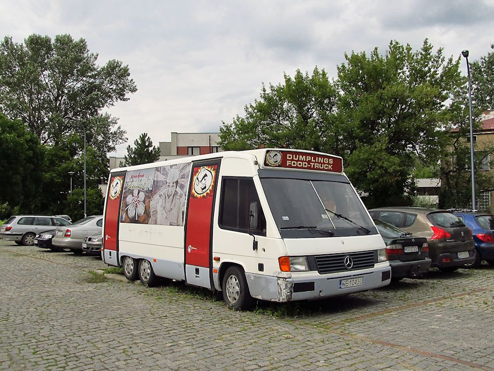
Foto: Janusz Jakubowski · CC BY 2.0
Going.2015–2023
8 latwspółzałożycielka bileterii
zdjęcie: do dodania (docelowo wideo 3–5 s)
Flying Lotus[data]
3 200biletów · [miejsce] · przykład
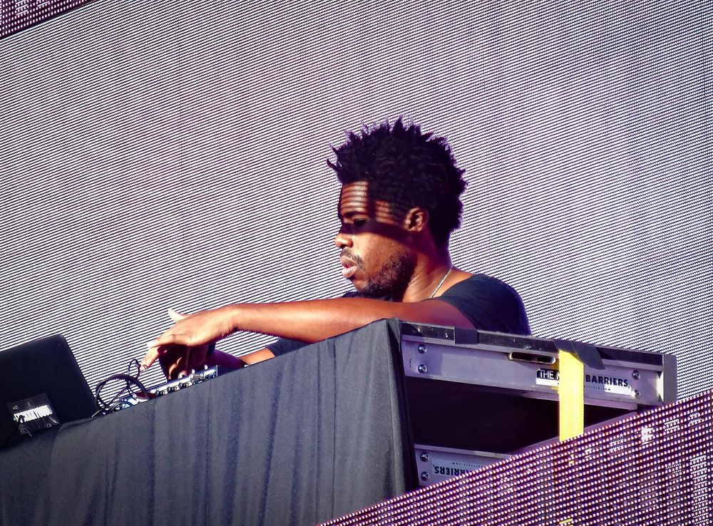
Foto: Chris · CC BY 2.0
Bicep + Ross From Friends24.11
1 400biletów · Kino Luna · przykład
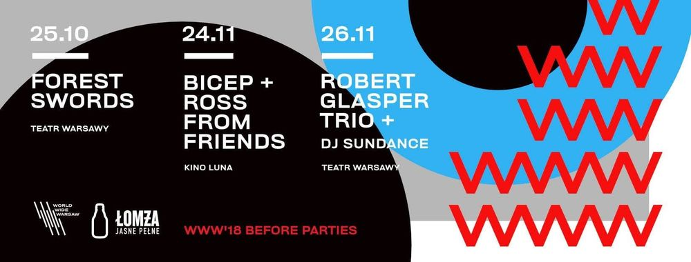
Plakat WWW Before Parties
Robert Glasper Trio26.11
1 100biletów · Teatr Warszawy · przykład
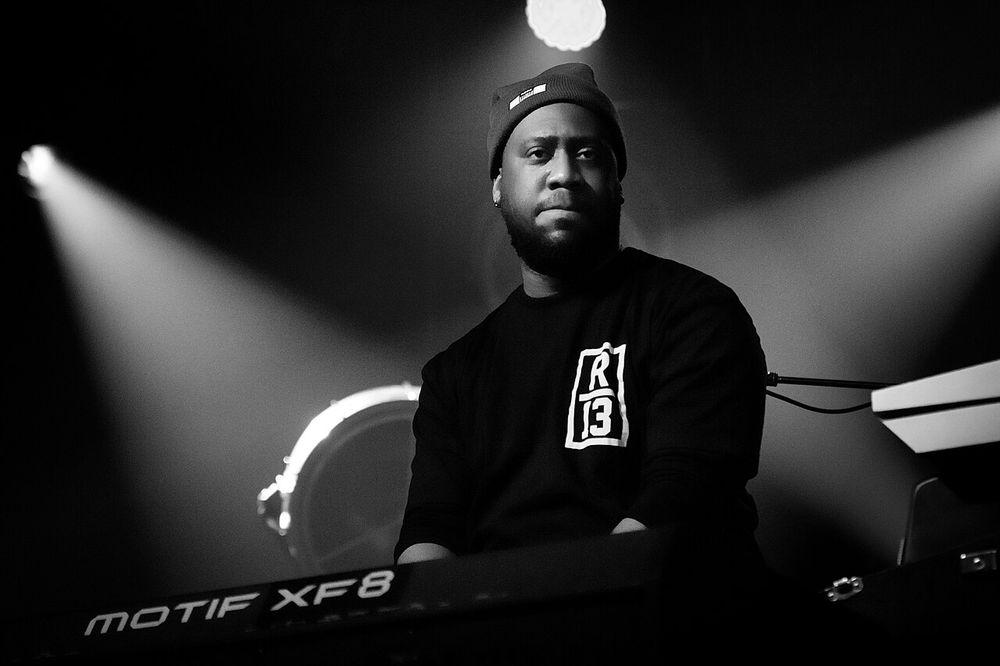
Foto: Andreas Lawen · CC BY-SA 4.0
Autechre10.11
900biletów · Teatr Powszechny · przykład
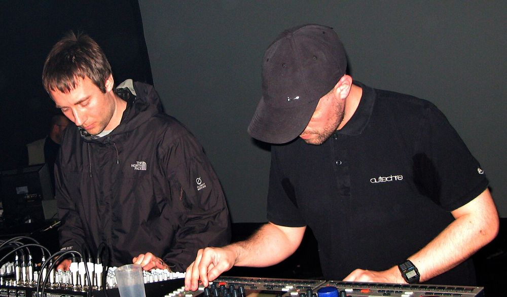
Foto: Pablo Sanz Almoguera · CC BY-SA 2.0
Wszystkie projekty20+ lat
50 000+wydarzeń (lekko szacując)
zdjęcie: do dodania (docelowo wideo 3–5 s)
Staż w branży
20+ latwydarzeń na żywo w Polsce
zdjęcie: do dodania (docelowo wideo 3–5 s)
06 · MARKI (≈ Partners & Campaigns)
Klon Lando: nagłówek + opis, duża grafika w tle (tu placeholder, zastąpi ją własna), pod spodem logo w pętli. Logo w jednolitej czerni (w ciemnych motywach białe), skalowane do podobnej powierzchni. Wszystkie logo mają 26 px wysokości. CCC, CEDC, Dr Witt i Oshee to tymczasowe napisy, do podmiany na oficjalne pliki. Hover zatrzymuje ruch. Wymaga zgody na użycie logotypów.
Collabs
Partnerzy& kampanie
Od ponad 20 lat pracuję z markami. Aktywnie działam przy sponsoringu m.in. dla Festiwalu Rapstacja i klubu Warsaw Padel Club. Poniżej część z nich.
CCC
Dr Witt
CEDC
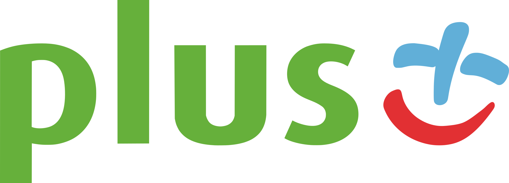
Oshee
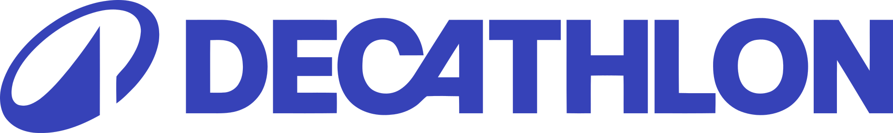
CCC
Dr Witt
CEDC
Oshee
07 · W CZYM POMAGAM
Wróciła wcześniejsza wersja listy z falą: numer, nazwa + podpis, tag obszaru, miniatura w aktywnym wierszu i metryka po prawej. Teksty to 7 kompetencji z dokumentu; metryki z dokumentu tam, gdzie są ([metryka] = brak danych). Na środku ekranu jest „trigger” (linię widać przy Adnotacjach).
W czym pomagam
Siedem obszarów, w których mogę wejść w Twoje buty.
01Wydarzenia i produkcjaPomysł, format, planowanie, budżet, organizacja, współpraca z dostawcami.Produkcjafoto~50 000 wydarzeń
02Artyści i rynek koncertowyStrategia działalności koncertowej, relacje z organizatorami, planowanie projektów.Koncertyfototrasa Maty 2025
03Kluby, obiekty i organizatorzyUruchomienie, programowanie działalności, komercjalizacja, procesy i rozwój.Obiektyfoto[metryka]
04Bilety, sprzedaż i marketingDystrybucja, ceny, dane, analiza wyników, kampanie i rozwój publiczności.SprzedażfotoGoing. 2015–2023
05Sponsoring i współpraceStrategia partnerstw, oferty, pozyskiwanie sponsorów, negocjacje i relacje.PartnerstwafotoRapstacja, Padel Club
06Biznes i zarządzanieStrategia, modele biznesowe, finanse projektu, zespoły, procesy i skalowanie.Strategiafoto20+ lat w branży
07Technologia i nowe przedsięwzięciaRozpoznanie potrzeb, budowa oferty, wejście na rynek, rozwój produktów.TechfotoQuilla
trigger · środek ekranu
BAZA WIEDZY (ukryta)
Tylko zapowiedź, bez rozbudowanego działu (tak zaleca dokument). Karuzela jak na Apple z tematami artykułów oznaczonymi „Wkrótce”. Gdy pojawią się materiały, karta może dostać adres, zdjęcie i datę.
Baza wiedzy
Praktyczne artykuły i materiały z branży wydarzeń. Wkrótce.
08 · JAK MOŻEMY DZIAŁAĆ
5 form współpracy z dokumentu, od jednej rozmowy po stałe wsparcie.
Jak możemy działać?
01
Jedna konkretna rozmowa
Kiedy potrzebujesz oceny sytuacji, drugiej opinii albo planu działania.
02
Rozwiązanie określonego problemu
Analiza, rekomendacje i wsparcie we wdrożeniu.
03
Prowadzenie projektu
Od koncepcji i budżetu po koordynację wybranych działań.
04
Stałe wsparcie biznesowe
Doradztwo, rozwój przedsięwzięcia, partnerstwa i zarządzanie w uzgodnionym zakresie.
05
Połączenie z właściwymi ludźmi
Wskazanie lub pozyskanie partnerów i specjalistów.
09 · KONTAKT
Dwie kolumny: po lewej zdjęcie Anki (placeholder), po prawej tytuł, krótkie zdanie i wbudowany kalendarz rezerwacji. Kalendarz to osadzony widżet Calendesk (iframe); jego wysokość dopasowuje się sama przez komunikat z widżetu.
zdjęcie Anki (pion 4:5)
Pogadajmy
Wybierz termin rozmowy. Opowiesz mi, nad czym pracujesz, a ja powiem, jak mogę pomóc.